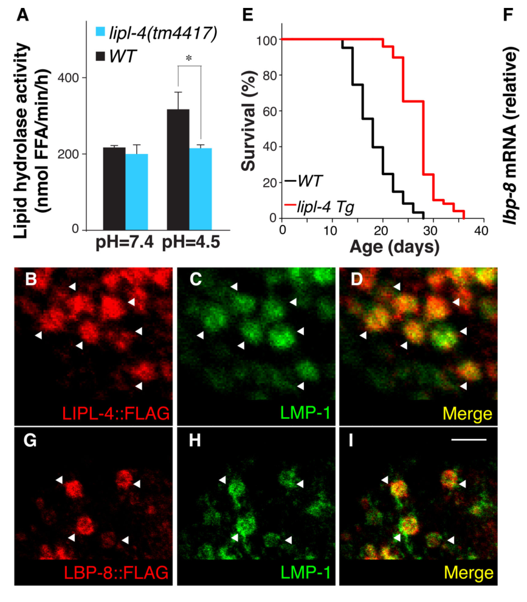

LBP-8 is a lysosomal lipid chaperone belonging to the fatty acid-binding protein (FABP) family. It functions as an intracellular lipid shuttle, binding long-chain fatty acids (especially oleic acid) and oleoylethanolamide (OEA) with high affinity and transporting them from lysosomes to the nucleus. In the nucleus, LBP-8-delivered lipid signals activate the nuclear hormone receptors NHR-49 and NHR-80, promoting transcription of genes involved in mitochondrial beta-oxidation (e.g. acs-2) and longevity. LBP-8 is part of the LIPL-4-initiated lysosome-to-nucleus retrograde lipid signaling pathway that extends lifespan. LBP-8 overexpression extends lifespan by approximately 30%, and this effect requires its structurally conserved nuclear localization signal (NLS) in the N-terminal helix-turn-helix motif. LBP-8 is expressed exclusively in the intestine. The crystal structure at 1.3 angstrom resolution (PDB 6C1Z) confirms it is a monomer with a typical lipocalin fold and a large interior cavity capable of accommodating diverse fatty acids.
| GO Term | Evidence | Action | Reason |
|---|---|---|---|
|
GO:0005634
nucleus
|
IBA
GO_REF:0000033 |
ACCEPT |
Summary: LBP-8 nuclear localization is well-established by direct experimental evidence (PMID:25554789). Folick et al. demonstrated partial nuclear localization of LBP-8 in the intestine, enhanced upon LIPL-4 overexpression. LBP-8 was detected in nuclear fractions of total worm lysate. The IBA annotation is consistent with all available evidence.
Reason: Nuclear localization is a core feature of LBP-8 function, demonstrated by fluorescent tagging and subcellular fractionation (PMID:25554789). Tillman et al. (PMID:31292465) further identified a structurally conserved NLS (K24, R33, K34) required for nuclear translocation. The IBA annotation is phylogenetically sound and experimentally validated.
Supporting Evidence:
PMID:25554789
We also detected partial nuclear localization of LBP-8 in the intestine, which was enhanced in lipl-4 Tg animals
PMID:31292465
we determined the first 1.3 Å high-resolution structure of this life-extending protein LBP-8, which allowed us to identify a structurally conserved nuclear localization signal
file:worm/lbp-8/lbp-8-deep-research-falcon.md
conserved, structural **nuclear localization signal (NLS)** formed by basic residues (K24/R33/K34). Deletion/mutation of this region abolishes nuclear translocation.
|
|
GO:0005829
cytosol
|
IBA
GO_REF:0000033 |
ACCEPT |
Summary: LBP-8 is an intracellular lipid-binding protein and, as a soluble FABP, would be expected to be present in the cytosol. Folick et al. (PMID:25554789) detected LBP-8 in cytoplasmic fractions. The IBA annotation is phylogenetically reasonable for FABPs.
Reason: Cytosolic localization is expected for a soluble FABP family member. LBP-8 was detected in cytoplasmic fractions (PMID:25554789), and as a lipid shuttle between lysosomes and nucleus, it transits through the cytosol. The IBA annotation is consistent with evidence.
Supporting Evidence:
PMID:25554789
LBP-8 contains an N-terminal nuclear localization signal (NLS) ... and was present in both cytoplasmic and nuclear fractions of total worm lysate
file:worm/lbp-8/lbp-8-deep-research-falcon.md
LBP-8 is predominantly **lysosomal in intestinal cells**, co-localizing with lysosomal marker **LMP-1**, and also appears in nuclear and cytosolic fractions
|
|
GO:0005504
fatty acid binding
|
IBA
GO_REF:0000033 |
ACCEPT |
Summary: LBP-8 fatty acid binding is well-established experimentally. Folick et al. (PMID:25554789) showed LBP-8 binds arachidonic acid, omega-3 arachidonic acid, DGLA, and OEA. Tillman et al. (PMID:31292465) used mass spectrometry to identify a broad range of fatty acids co-purifying with LBP-8, with preference for monounsaturated fatty acids. The IBA annotation is appropriate and at the right level of specificity for the FABP family.
Reason: Fatty acid binding is the central molecular function of LBP-8 as a FABP family member. Extensive experimental validation by both fluorescence-based binding assays (PMID:25554789) and LC/MS (PMID:31292465). The IBA annotation is at an appropriate level.
Supporting Evidence:
PMID:31292465
we described the range of fatty acids LBP-8 is capable of binding and show that it binds to life-extending ligands in worms such as oleic acid and oleoylethanolamide with high affinity
PMID:25554789
all four lipids bound to LBP-8, and the binding affinity of OEA for LBP-8 was 3 times higher than that of the fatty acids
file:worm/lbp-8/lbp-8-deep-research-falcon.md
LBP-8 binds long-chain fatty acids and fatty-acid derivatives.
file:worm/lbp-8/lbp-8-deep-research-falcon.md
Reported ligands include **oleoylethanolamide (OEA)**, **oleic acid**, **arachidonic acid (AA)**, **ω-3 AA**, and **DGLA**; competition assays showed **OEA binds with ~3-fold higher affinity** than the tested fatty acids.
|
|
GO:0015908
fatty acid transport
|
IBA
GO_REF:0000033 |
ACCEPT |
Summary: LBP-8 functions as an intracellular fatty acid transporter, shuttling lipid signals from lysosomes to the nucleus (PMID:25554789). The IBA annotation for fatty acid transport is phylogenetically sound and at the right level of specificity.
Reason: LBP-8 is an intracellular lipid chaperone that transports fatty acids and their derivatives from lysosomes to the nucleus (PMID:25554789). This is its core biological process. The IBA annotation at the level of fatty acid transport is appropriate.
Supporting Evidence:
PMID:25554789
LBP-8 may function as a lysosomal lipid chaperone transducing lipid signals to the nucleus
PMID:31292465
supporting the role of LBP-8 as a shuttling protein for monounsaturated fatty acids and their derivatives
file:worm/lbp-8/lbp-8-deep-research-falcon.md
LBP-8 carries lipid ligands (notably **OEA**) to nuclear hormone receptor machinery
|
|
GO:0005504
fatty acid binding
|
IEA
GO_REF:0000117 |
ACCEPT |
Summary: IEA annotation for fatty acid binding via ARBA machine learning. This is consistent with the experimentally validated function of LBP-8 as a FABP. Duplicates the IBA annotation but is acceptable as an independent computational prediction.
Reason: The IEA annotation is correct and consistent with extensive experimental evidence for fatty acid binding by LBP-8 (PMID:25554789, PMID:31292465). It is a valid independent computational prediction that agrees with the IBA annotation.
|
|
GO:0005634
nucleus
|
IEA
GO_REF:0000044 |
ACCEPT |
Summary: IEA annotation for nuclear localization based on UniProt subcellular location mapping. Consistent with IDA evidence from PMID:25554789 showing LBP-8 in the nucleus.
Reason: The IEA annotation correctly reflects the experimentally determined nuclear localization of LBP-8 (PMID:25554789). UniProt mapping is appropriate here.
|
|
GO:0005764
lysosome
|
IEA
GO_REF:0000044 |
ACCEPT |
Summary: IEA annotation for lysosomal localization based on UniProt subcellular location mapping. Consistent with IDA evidence from PMID:25554789 showing LBP-8 localization to lysosomes.
Reason: The IEA annotation correctly reflects the experimentally determined lysosomal localization of LBP-8. Folick et al. (PMID:25554789) showed FLAG- and mCherry-tagged LBP-8 predominantly localized to intestinal lysosomes.
Supporting Evidence:
PMID:25554789
Both FLAG- and mCherry-tagged LBP-8 proteins were predominantly localized to intestinal lysosomes
file:worm/lbp-8/lbp-8-deep-research-falcon.md
LBP-8 is predominantly **lysosomal in intestinal cells**, co-localizing with lysosomal marker **LMP-1**
|
|
GO:0008289
lipid binding
|
IEA
GO_REF:0000002 |
ACCEPT |
Summary: IEA annotation for lipid binding based on InterPro domain mapping. LBP-8 contains the FABP domain (IPR000463). This is a broader parent term of fatty acid binding (GO:0005504), which is already annotated with more specific evidence. The IEA is acceptable as it captures the InterPro-based prediction, though it is less specific than the IBA/IDA annotations.
Reason: The IEA annotation is correct but broader than the more specific fatty acid binding annotations already present. It is acceptable as an independent InterPro-based prediction. LBP-8 binds diverse lipids including fatty acids and OEA (PMID:25554789, PMID:31292465).
Supporting Evidence:
file:worm/lbp-8/lbp-8-deep-research-falcon.md
LBP-8 binds long-chain fatty acids and fatty-acid derivatives.
|
|
GO:0070538
oleic acid binding
|
IDA
PMID:31292465 Structural characterization of life-extending Caenorhabditis... |
ACCEPT |
Summary: Tillman et al. (PMID:31292465) directly demonstrated oleic acid binding to LBP-8 using competitive fluorescence-based binding assays and mass spectrometry. Oleic acid was the most abundant fatty acid co-purifying with LBP-8 from both E. coli and C. elegans lipid extracts. Oleic acid and OEA had similar high-affinity Ki values. This is a well-supported IDA annotation.
Reason: Oleic acid binding is directly demonstrated by competitive fluorescence binding assays and LC/MS co-purification in PMID:31292465. Oleic acid was the most abundant fatty acid bound to LBP-8 (28.93% from C. elegans extracts, 35.72% from E. coli). This specific binding activity is core to LBP-8 function.
Supporting Evidence:
PMID:31292465
A fluorescence-based ligand binding assay was used to compare the affinity of oleic acid and OEA, and both had very similar Ki's, suggesting oleic acid, along with OEA, are high affinity ligands of LBP-8
PMID:31292465
While the relative percentage of oleic acid decreased, it was still the most abundant fatty acid that bound to LBP-8
file:worm/lbp-8/lbp-8-deep-research-falcon.md
identifies co-purifying **palmitic (16:0)** and **oleic (18:1)** acids from *E. coli* and, after exposure to worm extracts, enrichment for **myristic (14:0)** and unsaturated fatty acids including **arachidonic (20:4)**, **linoleic (18:2)**, and **palmitoleic (16:1)**; oleic acid remained most abundant.
|
|
GO:0005324
long-chain fatty acid transmembrane transporter activity
|
IMP
PMID:25554789 Aging. Lysosomal signaling molecules regulate longevity in C... |
MODIFY |
Summary: GO:0005324 (long-chain fatty acid transporter activity) is defined as enabling transfer of long-chain fatty acids from one side of a membrane to the other. LBP-8 is not a transmembrane transporter. It is a soluble intracellular lipid chaperone that shuttles fatty acids between cellular compartments (lysosomes to nucleus) through the cytosol. Folick et al. (PMID:25554789) showed LBP-8 translocates from lysosomes to the nucleus carrying lipid signals, but this is intracellular lipid transfer, not transmembrane transport. The IMP evidence is based on lbp-8 mutant phenotypes affecting lipid signaling, not transmembrane transport assays.
Reason: The term GO:0005324 (long-chain fatty acid transporter activity) specifically describes transmembrane transport activity, which is not the mechanism by which LBP-8 functions. LBP-8 is a soluble lipid chaperone that binds fatty acids and shuttles them intracellularly (PMID:25554789, PMID:31292465). A more appropriate MF term would be lipid transfer activity (GO:0120013), defined as removing a lipid from a membrane, transporting it through the aqueous phase in a hydrophobic pocket, and delivering it to an acceptor. This matches the LBP-8 mechanism precisely.
Proposed replacements:
lipid transfer activity
Supporting Evidence:
PMID:25554789
LBP-8 may function as a lysosomal lipid chaperone transducing lipid signals to the nucleus
PMID:31292465
certain human FABPs have been shown to shuttle nuclear receptor ligands into the nucleus to regulate nuclear receptor transcription
file:worm/lbp-8/lbp-8-deep-research-falcon.md
LBP-8 is a **non-enzymatic intracellular lipid chaperone** that transfers lysosome-derived lipid signals to the nucleus. It does **not catalyze a reaction**; instead, it binds hydrophobic ligands and facilitates their delivery to transcriptional regulators.
|
|
GO:0005634
nucleus
|
IDA
PMID:25554789 Aging. Lysosomal signaling molecules regulate longevity in C... |
ACCEPT |
Summary: Folick et al. (PMID:25554789) directly showed nuclear localization of LBP-8 in the intestine using fluorescent tagging (mCherry, FLAG) and subcellular fractionation. Nuclear localization was enhanced in LIPL-4 overexpressing animals. LBP-8 was present in nuclear fractions. Deletion of the NLS abolished nuclear localization and lifespan extension.
Reason: Nuclear localization is a core feature of LBP-8 function, directly demonstrated by IDA evidence in PMID:25554789. LBP-8 translocates to the nucleus to deliver lipid signals to nuclear hormone receptors NHR-49 and NHR-80.
Supporting Evidence:
PMID:25554789
We also detected partial nuclear localization of LBP-8 in the intestine, which was enhanced in lipl-4 Tg animals
PMID:25554789
LBP-8 contains an N-terminal nuclear localization signal (NLS) ... and was present in both cytoplasmic and nuclear fractions of total worm lysate
file:worm/lbp-8/lbp-8-deep-research-falcon.md
LBP-8 is experimentally characterized as a lipid chaperone that translocates between lysosome and nucleus and drives transcriptional outputs via nuclear receptors.
|
|
GO:0005764
lysosome
|
IDA
PMID:25554789 Aging. Lysosomal signaling molecules regulate longevity in C... |
ACCEPT |
Summary: Folick et al. (PMID:25554789) directly showed LBP-8 localization to intestinal lysosomes using FLAG and mCherry tagging with colocalization studies. LBP-8 was predominantly found at lysosomes under basal conditions, with nuclear translocation enhanced upon LIPL-4 overexpression.
Reason: Lysosomal localization is a core feature of LBP-8, demonstrated by direct fluorescent microscopy and colocalization in PMID:25554789. This localization is central to LBP-8's role in the lysosome-to-nucleus signaling pathway.
Supporting Evidence:
PMID:25554789
Both FLAG- and mCherry-tagged LBP-8 proteins were predominantly localized to intestinal lysosomes
file:worm/lbp-8/lbp-8-deep-research-falcon.md
LBP-8 is predominantly **lysosomal in intestinal cells**, co-localizing with lysosomal marker **LMP-1**, and also appears in nuclear and cytosolic fractions; **lipl-4** overexpression enhances the nuclear fraction.
|
|
GO:0015909
long-chain fatty acid transport
|
IMP
PMID:25554789 Aging. Lysosomal signaling molecules regulate longevity in C... |
ACCEPT |
Summary: Folick et al. (PMID:25554789) demonstrated that LBP-8 is required for LIPL-4-mediated longevity signaling, which involves transport of lipid signals (including long-chain fatty acids and OEA) from lysosomes to the nucleus. The IMP evidence comes from lbp-8 loss-of-function suppressing lipl-4-mediated lifespan extension. While the biological process annotation is broadly correct, the transport is intracellular rather than across membranes.
Reason: Long-chain fatty acid transport is an appropriate biological process term for LBP-8. The GO:0015909 definition includes movement "within a cell", which accurately describes LBP-8's intracellular lipid shuttling function. The IMP evidence is sound: lbp-8 mutants suppress lipl-4-mediated longevity and lipid signaling (PMID:25554789).
Supporting Evidence:
PMID:25554789
Both RNA interference (RNAi)-mediated depletion of LBP-8 and a newly isolated deletion mutant, lbp-8(rax1), suppressed the lifespan extension in lipl-4 Tg animals
PMID:31292465
supporting the role of LBP-8 as a shuttling protein for monounsaturated fatty acids and their derivatives
file:worm/lbp-8/lbp-8-deep-research-falcon.md
functions as a **lysosome-to-nucleus lipid chaperone**
|
|
GO:0036041
long-chain fatty acid binding
|
IDA
PMID:25554789 Aging. Lysosomal signaling molecules regulate longevity in C... |
ACCEPT |
Summary: Folick et al. (PMID:25554789) demonstrated LBP-8 binding to long-chain fatty acids (arachidonic acid, omega-3 arachidonic acid, DGLA) and OEA using fluorescence-based binding assays. Tillman et al. (PMID:31292465) confirmed and extended this with LC/MS showing binding to a diverse range of long-chain fatty acids including oleic acid, arachidonic acid, linoleic acid, palmitic acid, and stearic acid.
Reason: Long-chain fatty acid binding is directly demonstrated by IDA evidence. Fluorescence-based binding assays (PMID:25554789) and mass spectrometry co-purification (PMID:31292465) both confirm LBP-8 binds diverse long-chain fatty acids. This is a core molecular function and the term is at the right level of specificity.
Supporting Evidence:
PMID:25554789
we focused our analysis on three C20 fatty acids—arachidonic acid (AA), ω-3 arachidonic acid (ω-3 AA), and dihomo-γ-linolenic acid (DGLA)—and oleoylethanolamide (OEA) ... all four lipids bound to LBP-8
PMID:31292465
LBP-8 does not bind to one fatty acid selectively but is capable of binding many fatty acids. However, LBP-8 does have a preference for unsaturated fatty acids
file:worm/lbp-8/lbp-8-deep-research-falcon.md
a preference for **monounsaturated fatty acyls**
|
|
GO:0006869
lipid transport
|
TAS
PMID:10693745 Secretion of a novel class of iFABPs in nematodes: coordinat... |
ACCEPT |
Summary: Plenefisch et al. (PMID:10693745) identified LBP-8 as one of nine C. elegans FABP homologs. The paper primarily focused on LBP-1, LBP-2, and LBP-3 (the secreted FABPs), and did not directly study LBP-8 function. The TAS evidence for lipid transport is based on homology to other FABPs. While the annotation is correct (LBP-8 does transport lipids), the evidence is weak for this specific gene. However, the annotation itself is valid given later experimental confirmation.
Reason: Lipid transport is a correct annotation for LBP-8, now thoroughly validated by later experimental work (PMID:25554789, PMID:31292465). While the original TAS reference (PMID:10693745) mainly studied other C. elegans FABPs (LBP-1, LBP-2, LBP-3), the general assignment of lipid transport to the FABP family was appropriate. More specific annotations (long-chain fatty acid transport) are also present with stronger evidence.
Supporting Evidence:
PMID:10693745
at least eight potential homologues of As-p18 have been identified in the Caenorhabditis elegans genome
PMID:25554789
LBP-8 may function as a lysosomal lipid chaperone transducing lipid signals to the nucleus
file:worm/lbp-8/lbp-8-deep-research-falcon.md
LBP-8’s primary molecular function is expected to be ligand binding and intracellular transport/targeting of hydrophobic metabolites
|
|
GO:0008289
lipid binding
|
TAS
PMID:10693745 Secretion of a novel class of iFABPs in nematodes: coordinat... |
ACCEPT |
Summary: Plenefisch et al. (PMID:10693745) identified LBP-8 as a FABP homolog in C. elegans. The TAS annotation for lipid binding is based on homology to fatty acid binding proteins. While the original paper mainly studied LBP-1/2/3, the annotation is correct and validated by later work. More specific annotations (fatty acid binding, long-chain fatty acid binding, oleic acid binding) are also present.
Reason: Lipid binding is correct for LBP-8, validated by extensive experimental evidence (PMID:25554789, PMID:31292465). The TAS evidence from PMID:10693745 was based on homology to known FABPs, which proved accurate. The annotation is broader than the more specific IDA/IBA annotations but acceptable.
Supporting Evidence:
file:worm/lbp-8/lbp-8-deep-research-falcon.md
LBP-8 binds long-chain fatty acids and fatty-acid derivatives.
|
|
GO:0032365
intracellular lipid transport
|
IDA
PMID:25554789 Aging. Lysosomal signaling molecules regulate longevity in C... |
NEW |
Summary: LBP-8 is an intracellular lipid chaperone that shuttles fatty acid signals from lysosomes to the nucleus. Folick et al. (PMID:25554789) demonstrated lysosome-to-nucleus translocation of LBP-8 carrying lipid signals including OEA. This intracellular lipid transport function is the core biological process of LBP-8.
Reason: GO:0032365 (intracellular lipid transport) is more precise than GO:0006869 (lipid transport) for describing LBP-8 function, as it specifically captures the intracellular nature of the lipid shuttling. LBP-8 transports lipids from lysosomes to nucleus within the cell. This term is not present in the current annotation set but is well-supported by experimental evidence.
Supporting Evidence:
PMID:25554789
LBP-8 may function as a lysosomal lipid chaperone transducing lipid signals to the nucleus
PMID:31292465
certain human FABPs have been shown to shuttle nuclear receptor ligands into the nucleus to regulate nuclear receptor transcription
file:worm/lbp-8/lbp-8-deep-research-falcon.md
functions as a **lysosome-to-nucleus lipid chaperone**
|
The research report should be a detailed narrative explaining the function, biological processes, and localization of the gene product. Citations should be given for all claims.
You should prioritize authoritative reviews and primary scientific literature when conducting research. You can supplement
this with annotations you find in gene/protein databases, but these can be outdated or inaccurate.
We are specifically interested in the primary function of the gene - for enzymes, what reaction is catalyzed, and what is the substrate specificity? For transporters, what is the substrate? For structural proteins or adapters, what is the broader structural role? For signaling molecules, what is the role in the pathway.
We are interested in where in or outside the cell the gene product carries out its function.
We are also interested in the signaling or biochemical pathways in which the gene functions. We are less interested in broad pleiotropic effects, except where these elucidate the precise role.
Include evidence where possible. We are interested in both experimental evidence as well as inference from structure, evolution, or bioinformatic analysis. Precise studies should be prioritized over high-throughput, where available.
The C. elegans gene lbp-8 is explicitly mapped to the predicted locus T22G5.6 (“lbp-8 = T22G5.6”) in early nematode iFABP gene-family work, where it was classified as one of the nematode intracellular fatty acid-binding protein (iFABP) genes (lbp-1 through lbp-8). (Feb 2000; Molecular and Biochemical Parasitology; https://doi.org/10.1016/S0166-6851(99)00179-6) (plenefisch2000secretionofa pages 3-4)
Subsequent functional and structural studies on “LBP-8” in C. elegans consistently describe a fatty-acid/lipid-binding protein in the FABP/iLBP group that participates in lysosome-to-nucleus lipid signaling and longevity. (Jan 2015; Science; https://doi.org/10.1126/science.1258857) (folick2015lysosomalsignalingmolecules pages 1-3, folick2015lysosomalsignalingmolecules pages 4-10) (Jul 2019; Scientific Reports; https://doi.org/10.1038/s41598-019-46230-8) (tillman2019structuralcharacterizationof pages 1-2, tillman2019structuralcharacterizationof pages 2-3)
No evidence in the retrieved literature suggests this C. elegans lbp-8/T22G5.6 is conflated with a different organism’s “LBP-8”; the key mechanistic papers are explicitly in Caenorhabditis elegans. (folick2015lysosomalsignalingmolecules pages 1-3, plenefisch2000secretionofa pages 3-4)
Fatty acid-binding proteins (FABPs; also termed intracellular lipid-binding proteins, iLBPs) are small, soluble, non-enzymatic proteins that bind hydrophobic ligands (notably fatty acids and metabolites) and support intracellular lipid handling. A 2024 review synthesizes a consensus view that FABPs function as “sensors, conveyors and modulators”: they bind lipid metabolites, shuttle/sequester them, and modulate metabolic/signaling programs (including via nuclear receptor pathways). (Mar 2024; Journal of Cellular and Molecular Medicine; https://doi.org/10.1111/jcmm.17703) (agellon2024importanceoffatty pages 1-2, agellon2024importanceoffatty pages 5-6)
Structurally, FABPs belong to the calycin/lipocalin-like superfamily, sharing a conserved fold despite low sequence identity, including a β-barrel that encloses a ligand-binding cavity and an α-helical “lid/portal” implicated in ligand entry and membrane interactions. (Mar 2024; https://doi.org/10.1111/jcmm.17703) (agellon2024importanceoffatty pages 4-5, agellon2024importanceoffatty pages 2-4)
By this definition, LBP-8’s primary molecular function is expected to be ligand binding and intracellular transport/targeting of hydrophobic metabolites, not catalysis. The C. elegans literature directly supports this: LBP-8 is experimentally characterized as a lipid chaperone that translocates between lysosome and nucleus and drives transcriptional outputs via nuclear receptors. (folick2015lysosomalsignalingmolecules pages 1-3, folick2015lysosomalsignalingmolecules pages 4-10, tillman2019structuralcharacterizationof pages 1-2)
LBP-8 binds long-chain fatty acids and fatty-acid derivatives. In the longevity-defining study, LBP-8 binds arachidonic acid (AA), ω-3 AA, dihomo-γ-linolenic acid (DGLA), and the fatty-acid ethanolamide oleoylethanolamide (OEA). In competitive binding assays, OEA bound LBP-8 with ~3× higher affinity than the tested fatty acids (relative comparison reported). (Jan 2015; Science; https://doi.org/10.1126/science.1258857) (folick2015lysosomalsignalingmolecules pages 3-4, folick2015lysosomalsignalingmolecules pages 4-10)
Structural/biochemical follow-up indicates a preference for monounsaturated fatty acyls, and shows that LBP-8 can co-purify with fatty acids and exchange ligands upon exposure to worm lipid extracts (e.g., enrichment for unsaturated species including oleic acid). (Jul 2019; Scientific Reports; https://doi.org/10.1038/s41598-019-46230-8) (tillman2019structuralcharacterizationof pages 3-6, tillman2019structuralcharacterizationof pages 9-10)
LBP-8’s crystal structure at 1.3 Å (PDB 6C1Z) shows the canonical FABP fold (helix-turn-helix lid + 10-stranded β-barrel) and defines a ligand cavity (reported surface area ~825 Ų and volume ~1170 ų) lined by hydrophobic residues plus polar residues including conserved R132, implicated in head-group interactions. (Jul 2019; https://doi.org/10.1038/s41598-019-46230-8) (tillman2019structuralcharacterizationof pages 6-7, tillman2019structuralcharacterizationof pages 2-3)
A key feature of LBP-8 is a conserved, structural nuclear localization signal (NLS) formed by basic residues (K24/R33/K34). Deletion/mutation of this region abolishes nuclear translocation. (Jul 2019; https://doi.org/10.1038/s41598-019-46230-8) (tillman2019structuralcharacterizationof pages 3-6)
The central experimentally supported model is a lysosome-to-nucleus lipid signaling pathway:
1) Lysosomal lipolysis is stimulated via the lysosomal acid lipase LIPL-4.
2) LBP-8 levels increase and LBP-8 translocates from lysosomes to the nucleus.
3) LBP-8 carries lipid ligands (notably OEA) to nuclear hormone receptor machinery.
4) Nuclear receptors NHR-80 (direct OEA-binding) and NHR-49 (partner/cofactor) drive transcriptional programs (e.g., fatty-acid metabolism genes such as acs-2) that promote longevity. (folick2015lysosomalsignalingmolecules pages 1-3, folick2015lysosomalsignalingmolecules pages 3-4, folick2015lysosomalsignalingmolecules pages 4-10)
The 2015 Science paper provides causal genetic support: lbp-8 loss-of-function suppresses lipl-4-driven lifespan extension, while lbp-8 overexpression is sufficient to extend lifespan. (https://doi.org/10.1126/science.1258857) (folick2015lysosomalsignalingmolecules pages 1-3, folick2015lysosomalsignalingmolecules pages 4-10)
Key quantitative outcomes reported include:
- lipl-4 overexpression: ~55% mean lifespan increase. (folick2015lysosomalsignalingmolecules pages 1-3)
- lbp-8 overexpression: ~30% mean lifespan increase. (folick2015lysosomalsignalingmolecules pages 1-3, folick2015lysosomalsignalingmolecules pages 4-10)
- lbp-8 loss-of-function: reduces lipl-4-mediated lifespan extension by ~46% (reported as reduction of the extension). (folick2015lysosomalsignalingmolecules pages 4-10)
- Nuclear localization requirement: NLS-deleted LBP-8 is excluded from nuclei and shows little/no lifespan extension; transcription of acs-2 increases >10-fold in lbp-8 transgenics but not in NLS-deficient lbp-8 transgenics. (folick2015lysosomalsignalingmolecules pages 3-4, folick2015lysosomalsignalingmolecules pages 1-3)
- OEA signaling outputs: after 3 h of OEA-analogue treatment, lbp-8 transcription increased >4-fold and acs-2 >7-fold. (folick2015lysosomalsignalingmolecules pages 3-4)
The supporting visual evidence for localization, nuclear enrichment, and lifespan effects is shown in the retrieved figure panels from Folick et al. (LBP-8 lysosomal localization; nuclear localization; lifespan curves; ligand competition/binding assays). (folick2015lysosomalsignalingmolecules media 5ffc0917, folick2015lysosomalsignalingmolecules media 6d188de1, folick2015lysosomalsignalingmolecules media 8dce14ac)
NHR-80 binds OEA directly with Kd = 7.841 µM (intrinsic fluorescence assay), whereas no OEA binding was detected for NHR-49 in that study, consistent with NHR-49 acting in a receptor complex rather than as the direct OEA-binding receptor. (Jan 2015; https://doi.org/10.1126/science.1258857) (folick2015lysosomalsignalingmolecules pages 3-4)
In the primary longevity pathway study, lbp-8 expression was reported as exclusive to the intestine. (folick2015lysosomalsignalingmolecules pages 1-3)
LBP-8 is predominantly lysosomal in intestinal cells, co-localizing with lysosomal marker LMP-1, and also appears in nuclear and cytosolic fractions; lipl-4 overexpression enhances the nuclear fraction. (folick2015lysosomalsignalingmolecules pages 1-3, folick2015lysosomalsignalingmolecules pages 4-10)
The figure evidence retrieved from Folick et al. shows lysosomal co-localization and nuclear localization panels consistent with this dual localization and translocation model. (folick2015lysosomalsignalingmolecules media 5ffc0917, folick2015lysosomalsignalingmolecules media 6d188de1, folick2015lysosomalsignalingmolecules media 8dce14ac)
A 2023 review positions NHR-49 as an essential regulator of stress resilience and healthy aging, describing its roles in fatty-acid catabolism/desaturation and its partnership with NHR-80 (heterodimerization) and cofactors such as MDT-15. While this review excerpt does not focus on LBP-8 directly, it strengthens the pathway-level interpretation that LBP-8’s longevity effect is mediated through an established NHR-49/NHR-80 lipid-metabolism transcriptional module. (Aug 2023; Frontiers in Physiology; https://doi.org/10.3389/fphys.2023.1241591) (doering2023nuclearhormonereceptor pages 1-2)
The 2024 FABP review provides a modern synthesis that FABPs can act as ligand-dependent nuclear signaling modulators, including in some contexts translocating to the nucleus to engage nuclear receptors. This framework aligns with LBP-8’s experimentally observed lysosome-to-nucleus translocation and receptor-linked transcriptional regulation. (Mar 2024; https://doi.org/10.1111/jcmm.17703) (agellon2024importanceoffatty pages 4-5, agellon2024importanceoffatty pages 5-6)
Within the retrieved corpus, the most detailed LBP-8-specific mechanistic primary literature remains 2015 (Science) and 2019 (Scientific Reports), with additional mechanistic expansion in 2021 (preprint) and 2022 (Nature Cell Biology). The retrieved 2023–2024 sources primarily provide authoritative synthesis and context (NHR-49 biology; FABP family function) rather than new LBP-8-specific experiments. (doering2023nuclearhormonereceptor pages 1-2, agellon2024importanceoffatty pages 1-2)
1) Aging and lysosome-to-nucleus signaling model system: LBP-8 is used as a genetically tractable node to study how lysosomal lipolysis generates lipid signals that reprogram transcription to alter lifespan (lipl-4 → LBP-8 → NHR-49/NHR-80 → target genes). This pathway provides a concrete experimental system for “organelle communication” in aging. (folick2015lysosomalsignalingmolecules pages 4-10, tillman2019structuralcharacterizationof pages 1-2)
2) Structure-guided lipid-chaperone biology: The high-resolution LBP-8 structure (6C1Z) and defined NLS residues enable mutational tests of nuclear trafficking and ligand binding, and provide a scaffold for interpreting how sequence divergence preserves a conserved FABP fold with altered cavity chemistry. (tillman2019structuralcharacterizationof pages 2-3, tillman2019structuralcharacterizationof pages 6-7)
3) Inter-tissue lipid signaling context: In a broader lysosomal lipid signaling network, LBP-8 can show additive lifespan extension effects with LBP-3, helping dissect tissue-to-neuron communication (though LBP-3 is the more prominent inter-tissue transporter in that study). (Jun 2022; Nature Cell Biology; https://doi.org/10.1038/s41556-022-00926-8) (savini2022lysosomelipidsignalling pages 10-10)
The following evidence matrix summarizes identity, family, localization, ligands, pathways, quantitative phenotypes, and methods.
| Claim/Aspect | Key findings with quantitative values when available | Primary source (year, journal) plus URL |
|---|---|---|
| Identity | lbp-8 in Caenorhabditis elegans is explicitly mapped to T22G5.6: “lbp-8 = T22G5.6”; classified as one of the nematode intracellular fatty acid-binding protein (iFABP) genes. Later work identifies LBP-8 as the C. elegans lipid/fatty-acid binding protein studied in longevity signaling. (plenefisch2000secretionofa pages 3-4, tillman2019structuralcharacterizationof pages 1-2) | Plenefisch et al. 2000, Molecular and Biochemical Parasitology. https://doi.org/10.1016/S0166-6851(99)00179-6; Tillman et al. 2019, Scientific Reports. https://doi.org/10.1038/s41598-019-46230-8 |
| Family / structure | LBP-8 is an intracellular lipid-binding protein of the FABP/iLBP group within the calycin/lipocalin-like fold class; the 1.3 Å crystal structure (PDB 6C1Z) shows the canonical FABP architecture: N-terminal helix-turn-helix lid plus twisted 10-stranded antiparallel β-barrel. Protein is monomeric at ~16.4 kDa. The portal region supports a “collisional” FABP-like membrane interaction model. (tillman2019structuralcharacterizationof pages 1-2, tillman2019structuralcharacterizationof pages 2-3) | Tillman et al. 2019, Scientific Reports. https://doi.org/10.1038/s41598-019-46230-8 |
| General FABP concept relevant to annotation | FABPs are small cytosolic lipid-binding proteins that act as sensors, conveyors, and modulators of hydrophobic metabolites; they typically bind fatty acids noncovalently and can shuttle ligands to membranes or nuclear receptors. These family properties support interpreting LBP-8 as a non-enzymatic lipid chaperone rather than an enzyme. (agellon2024importanceoffatty pages 1-2, agellon2024importanceoffatty pages 4-5, agellon2024importanceoffatty pages 2-4, agellon2024importanceoffatty pages 5-6) | Agellon 2024, Journal of Cellular and Molecular Medicine. https://doi.org/10.1111/jcmm.17703; Zhang et al. 2020, FEBS Open Bio. https://doi.org/10.1002/2211-5463.12840 |
| Tissue expression | In the key longevity study, lbp-8 was exclusively expressed in the intestine. (folick2015lysosomalsignalingmolecules pages 1-3) | Folick et al. 2015, Science. https://doi.org/10.1126/science.1258857 |
| Subcellular localization | LBP-8 localizes predominantly to intestinal lysosomes (co-localization with LMP-1) and is also detected in nuclear and cytoplasmic fractions; lipl-4 overexpression enhances nuclear localization. In an LBP-8::GFP strain, 72–100% of worms showed nuclear enrichment in the first intestinal cell pair under control conditions; rpc-2 RNAi significantly reduced nuclear-enriched LBP-8. Visual evidence is in Folick Fig. 1G–I and 2A–G. (folick2015lysosomalsignalingmolecules pages 1-3, duffy2021lipidchaperonelbp8 pages 5-8, folick2015lysosomalsignalingmolecules pages 4-10, folick2015lysosomalsignalingmolecules media 5ffc0917) | Folick et al. 2015, Science. https://doi.org/10.1126/science.1258857; Duffy et al. 2021, bioRxiv. https://doi.org/10.1101/2021.09.09.459489 |
| Nuclear localization signal | LBP-8 contains an N-terminal / structural NLS. Basic residues K24, R33, K34 form a conserved 3D NLS analogous to mammalian FABP5. Deleting or mutating this region abolishes nuclear translocation, and NLS-deficient LBP-8 loses most longevity activity and fails to induce acs-2. (folick2015lysosomalsignalingmolecules pages 1-3, tillman2019structuralcharacterizationof pages 3-6) | Folick et al. 2015, Science. https://doi.org/10.1126/science.1258857; Tillman et al. 2019, Scientific Reports. https://doi.org/10.1038/s41598-019-46230-8 |
| Ligands / binding specificity | LBP-8 binds long-chain fatty acids and fatty-acid derivatives. Reported ligands include oleoylethanolamide (OEA), oleic acid, arachidonic acid (AA), ω-3 AA, and DGLA; competition assays showed OEA binds with ~3-fold higher affinity than the tested fatty acids. Structural/lipidomic work indicates preference for monounsaturated fatty acyls and identifies co-purifying palmitic (16:0) and oleic (18:1) acids from E. coli and, after exposure to worm extracts, enrichment for myristic (14:0) and unsaturated fatty acids including arachidonic (20:4), linoleic (18:2), and palmitoleic (16:1); oleic acid remained most abundant. (folick2015lysosomalsignalingmolecules pages 3-4, tillman2019structuralcharacterizationof pages 3-6, folick2015lysosomalsignalingmolecules pages 4-10, tillman2019structuralcharacterizationof pages 9-10, tillman2019structuralcharacterizationof pages 6-7) | Folick et al. 2015, Science. https://doi.org/10.1126/science.1258857; Tillman et al. 2019, Scientific Reports. https://doi.org/10.1038/s41598-019-46230-8 |
| Binding pocket features | The ligand cavity has solvent-accessible surface area ~825 Ų and volume ~1170 ų; it is lined by hydrophobic residues (F19, F60, L65, F67, F73, F94, F110, T112, F134) plus polar residues including conserved R132 implicated in ligand head-group recognition. Interior/pocket mutants (Q121A, Y123A, R132A) altered ligand interactions. (tillman2019structuralcharacterizationof pages 6-7, tillman2019structuralcharacterizationof pages 8-9) | Tillman et al. 2019, Scientific Reports. https://doi.org/10.1038/s41598-019-46230-8 |
| Primary molecular function | Best-supported annotation: LBP-8 is a non-enzymatic intracellular lipid chaperone that transfers lysosome-derived lipid signals to the nucleus. It does not catalyze a reaction; instead, it binds hydrophobic ligands and facilitates their delivery to transcriptional regulators. (folick2015lysosomalsignalingmolecules pages 1-3, tillman2019structuralcharacterizationof pages 2-3, agellon2024importanceoffatty pages 5-6, tillman2019structuralcharacterizationof pages 1-2) | Folick et al. 2015, Science. https://doi.org/10.1126/science.1258857; Agellon 2024, Journal of Cellular and Molecular Medicine. https://doi.org/10.1111/jcmm.17703 |
| Upstream pathway input | LIPL-4 lysosomal lipase induction upregulates lbp-8 and increases nuclear translocation of LBP-8. LIPL-4 overexpression elevates OEA and other fatty acids and extends mean lifespan by about 55%. LBP-8 is required for much of this effect. (folick2015lysosomalsignalingmolecules pages 1-3, folick2015lysosomalsignalingmolecules pages 4-10) | Folick et al. 2015, Science. https://doi.org/10.1126/science.1258857 |
| Downstream pathway / nuclear receptors | LBP-8 acts in a lysosome-to-nucleus lipid signaling pathway activating nuclear receptors NHR-49 and NHR-80. OEA binds NHR-80 directly with Kd = 7.841 µM; no OEA binding was detected for NHR-49, consistent with NHR-49 acting as a cofactor/partner. LBP-8 nuclear action increases transcription of targets such as acs-2; acs-2 induction exceeded 10-fold in lbp-8 transgenics but not in NLS-deficient transgenics. (folick2015lysosomalsignalingmolecules pages 3-4, folick2015lysosomalsignalingmolecules pages 4-10, tillman2019structuralcharacterizationof pages 1-2, doering2023nuclearhormonereceptor pages 1-2) | Folick et al. 2015, Science. https://doi.org/10.1126/science.1258857; Doering et al. 2023, Frontiers in Physiology. https://doi.org/10.3389/fphys.2023.1241591 |
| Nutrient / metabolic regulation | nhr-49 regulates lbp-8 expression in nutritional response pathways; earlier work reported ~4-fold compromised lbp-8 expression in fed nhr-49(nr2041) mutants. Review literature in 2023 emphasizes NHR-49 as a central regulator of lipid metabolism, stress resilience, and healthy aging, providing context for LBP-8’s placement in this pathway. (doering2023nuclearhormonereceptor pages 1-2) | van Gilst et al. 2005, PNAS. https://doi.org/10.1073/pnas.0506234102; Doering et al. 2023, Frontiers in Physiology. https://doi.org/10.3389/fphys.2023.1241591 |
| Longevity phenotype | lbp-8 overexpression increases mean lifespan by about 30%. lbp-8 loss-of-function does not strongly alter WT lifespan but reduces lipl-4-mediated lifespan extension by about 46%. A transgenic LBP-8 lacking the NLS shows little or no lifespan extension. Visual lifespan evidence is in Folick Fig. 2I. (folick2015lysosomalsignalingmolecules pages 1-3, folick2015lysosomalsignalingmolecules pages 4-10, folick2015lysosomalsignalingmolecules media 5ffc0917) | Folick et al. 2015, Science. https://doi.org/10.1126/science.1258857 |
| OEA-related quantitative effects | OEA or an OEA analogue increased transcription of lbp-8 by >4-fold and acs-2 by >7-fold after 3 h treatment; direct OEA-analogue treatment prolonged WT lifespan but did not further extend lifespan in lipl-4 or lbp-8 transgenics. nape-1 loss suppressed lifespan extension in lipl-4 Tg and lbp-8 Tg by about half. (folick2015lysosomalsignalingmolecules pages 3-4) | Folick et al. 2015, Science. https://doi.org/10.1126/science.1258857 |
| Additional phenotypic / functional effects | A 2021 proteomic-genetic study reported that LBP-8 overexpression reduced fat storage and upregulated mitochondrial β-oxidation genes; in a screen, day-17 survival averaged 56% alive vs 38% WT for the overexpression strain under EV controls. (duffy2021lipidchaperonelbp8 pages 1-5, duffy2021lipidchaperonelbp8 pages 5-8) | Duffy et al. 2021, bioRxiv. https://doi.org/10.1101/2021.09.09.459489 |
| Protein partners / nuclear retention | Anti-FLAG IP-MS identified 45 candidate LBP-8 interactors (≥50-fold enrichment cutoff; replicate correlations R = 0.89–0.94). Several genes were required for LBP-8-mediated longevity, especially the nuclear factor RPC-2, which was also necessary for robust nuclear localization of LBP-8; nuclear import, rather than export, was required for the longevity effect. (duffy2021lipidchaperonelbp8 pages 1-5, duffy2021lipidchaperonelbp8 pages 5-8, duffy2021lipidchaperonelbp8 pages 18-27) | Duffy et al. 2021, bioRxiv. https://doi.org/10.1101/2021.09.09.459489 |
| Relationship to inter-tissue lipid signaling | In a broader lysosomal lipid-signaling network, LBP-3 and LBP-8 can have additive effects on lifespan; nhr-49 is required downstream of intestine-derived lysosomal lipid signaling to neuropeptide pathways. However, lbp-8 alone had minimal effect on some neuropeptide transcripts compared with lbp-3. (savini2022lysosomelipidsignalling pages 10-10) | Savini et al. 2022, Nature Cell Biology. https://doi.org/10.1038/s41556-022-00926-8 |
| Key methods supporting annotation | Gene-family mapping / sequence inspection; transgenics and mutant analysis; RNAi; lysosome marker co-localization (LMP-1); nuclear/cytoplasmic fractionation; lifespan assays; fluorescence competition binding; intrinsic fluorescence for receptor binding; X-ray crystallography (1.3 Å, PDB 6C1Z); 1,8-ANS binding assays; differential scanning fluorimetry; circular dichroism; lipid extraction and mass spectrometry; anti-FLAG IP-MS proteomics. (folick2015lysosomalsignalingmolecules pages 1-3, folick2015lysosomalsignalingmolecules pages 3-4, duffy2021lipidchaperonelbp8 pages 5-8, tillman2019structuralcharacterizationof pages 2-3, tillman2019structuralcharacterizationof pages 10-11, folick2015lysosomalsignalingmolecules media 5ffc0917) | Plenefisch et al. 2000, Molecular and Biochemical Parasitology. https://doi.org/10.1016/S0166-6851(99)00179-6; Folick et al. 2015, Science. https://doi.org/10.1126/science.1258857; Tillman et al. 2019, Scientific Reports. https://doi.org/10.1038/s41598-019-46230-8; Duffy et al. 2021, bioRxiv. https://doi.org/10.1101/2021.09.09.459489 |
Table: This table summarizes identity, molecular function, localization, pathway placement, ligands, phenotypes, and methods for C. elegans LBP-8 using only the cited evidence sources. It is useful as a compact evidence matrix for functional annotation of lbp-8/T22G5.6 (UniProt O02324).
lbp-8 (T22G5.6; UniProt O02324) encodes an intracellular fatty-acid binding protein (FABP/iLBP; calycin/lipocalin-like fold) expressed in the intestine, localized primarily to lysosomes but capable of nuclear translocation via a conserved structural NLS. LBP-8 binds long-chain lipids including OEA (higher relative affinity vs tested fatty acids) and functions as a lysosome-to-nucleus lipid chaperone that engages the NHR-49/NHR-80 transcriptional module (with direct OEA binding shown for NHR-80, Kd ~7.841 µM), thereby inducing lipid-metabolic transcriptional programs (e.g., acs-2) and promoting longevity when overexpressed. (folick2015lysosomalsignalingmolecules pages 4-10, folick2015lysosomalsignalingmolecules pages 3-4, tillman2019structuralcharacterizationof pages 3-6, plenefisch2000secretionofa pages 3-4)
References
(plenefisch2000secretionofa pages 3-4): John Plenefisch, Hong Xiao, Baisong Mei, Jinming Geng, Patricia R Komuniecki, and Richard Komuniecki. Secretion of a novel class of ifabps in nematodes: coordinate use of the ascaris/caenorhabditis model systems. Molecular and biochemical parasitology, 105 2:223-36, Feb 2000. URL: https://doi.org/10.1016/s0166-6851(99)00179-6, doi:10.1016/s0166-6851(99)00179-6. This article has 57 citations and is from a peer-reviewed journal.
(folick2015lysosomalsignalingmolecules pages 1-3): Andrew Folick, Holly D. Oakley, Yong Yu, Eric H. Armstrong, Manju Kumari, Lucas Sanor, David D. Moore, Eric A. Ortlund, Rudolf Zechner, and Meng C. Wang. Lysosomal signaling molecules regulate longevity in caenorhabditis elegans. Science, 347:83-86, Jan 2015. URL: https://doi.org/10.1126/science.1258857, doi:10.1126/science.1258857. This article has 316 citations and is from a highest quality peer-reviewed journal.
(folick2015lysosomalsignalingmolecules pages 4-10): Andrew Folick, Holly D. Oakley, Yong Yu, Eric H. Armstrong, Manju Kumari, Lucas Sanor, David D. Moore, Eric A. Ortlund, Rudolf Zechner, and Meng C. Wang. Lysosomal signaling molecules regulate longevity in caenorhabditis elegans. Science, 347:83-86, Jan 2015. URL: https://doi.org/10.1126/science.1258857, doi:10.1126/science.1258857. This article has 316 citations and is from a highest quality peer-reviewed journal.
(tillman2019structuralcharacterizationof pages 1-2): Matthew C. Tillman, Manoj Khadka, Jonathon Duffy, Meng C. Wang, and Eric A. Ortlund. Structural characterization of life-extending caenorhabditis elegans lipid binding protein 8. Scientific Reports, Jul 2019. URL: https://doi.org/10.1038/s41598-019-46230-8, doi:10.1038/s41598-019-46230-8. This article has 15 citations and is from a peer-reviewed journal.
(tillman2019structuralcharacterizationof pages 2-3): Matthew C. Tillman, Manoj Khadka, Jonathon Duffy, Meng C. Wang, and Eric A. Ortlund. Structural characterization of life-extending caenorhabditis elegans lipid binding protein 8. Scientific Reports, Jul 2019. URL: https://doi.org/10.1038/s41598-019-46230-8, doi:10.1038/s41598-019-46230-8. This article has 15 citations and is from a peer-reviewed journal.
(agellon2024importanceoffatty pages 1-2): Luis B. Agellon. Importance of fatty acid binding proteins in cellular function and organismal metabolism. Journal of Cellular and Molecular Medicine, Mar 2024. URL: https://doi.org/10.1111/jcmm.17703, doi:10.1111/jcmm.17703. This article has 27 citations and is from a peer-reviewed journal.
(agellon2024importanceoffatty pages 5-6): Luis B. Agellon. Importance of fatty acid binding proteins in cellular function and organismal metabolism. Journal of Cellular and Molecular Medicine, Mar 2024. URL: https://doi.org/10.1111/jcmm.17703, doi:10.1111/jcmm.17703. This article has 27 citations and is from a peer-reviewed journal.
(agellon2024importanceoffatty pages 4-5): Luis B. Agellon. Importance of fatty acid binding proteins in cellular function and organismal metabolism. Journal of Cellular and Molecular Medicine, Mar 2024. URL: https://doi.org/10.1111/jcmm.17703, doi:10.1111/jcmm.17703. This article has 27 citations and is from a peer-reviewed journal.
(agellon2024importanceoffatty pages 2-4): Luis B. Agellon. Importance of fatty acid binding proteins in cellular function and organismal metabolism. Journal of Cellular and Molecular Medicine, Mar 2024. URL: https://doi.org/10.1111/jcmm.17703, doi:10.1111/jcmm.17703. This article has 27 citations and is from a peer-reviewed journal.
(folick2015lysosomalsignalingmolecules pages 3-4): Andrew Folick, Holly D. Oakley, Yong Yu, Eric H. Armstrong, Manju Kumari, Lucas Sanor, David D. Moore, Eric A. Ortlund, Rudolf Zechner, and Meng C. Wang. Lysosomal signaling molecules regulate longevity in caenorhabditis elegans. Science, 347:83-86, Jan 2015. URL: https://doi.org/10.1126/science.1258857, doi:10.1126/science.1258857. This article has 316 citations and is from a highest quality peer-reviewed journal.
(tillman2019structuralcharacterizationof pages 3-6): Matthew C. Tillman, Manoj Khadka, Jonathon Duffy, Meng C. Wang, and Eric A. Ortlund. Structural characterization of life-extending caenorhabditis elegans lipid binding protein 8. Scientific Reports, Jul 2019. URL: https://doi.org/10.1038/s41598-019-46230-8, doi:10.1038/s41598-019-46230-8. This article has 15 citations and is from a peer-reviewed journal.
(tillman2019structuralcharacterizationof pages 9-10): Matthew C. Tillman, Manoj Khadka, Jonathon Duffy, Meng C. Wang, and Eric A. Ortlund. Structural characterization of life-extending caenorhabditis elegans lipid binding protein 8. Scientific Reports, Jul 2019. URL: https://doi.org/10.1038/s41598-019-46230-8, doi:10.1038/s41598-019-46230-8. This article has 15 citations and is from a peer-reviewed journal.
(tillman2019structuralcharacterizationof pages 6-7): Matthew C. Tillman, Manoj Khadka, Jonathon Duffy, Meng C. Wang, and Eric A. Ortlund. Structural characterization of life-extending caenorhabditis elegans lipid binding protein 8. Scientific Reports, Jul 2019. URL: https://doi.org/10.1038/s41598-019-46230-8, doi:10.1038/s41598-019-46230-8. This article has 15 citations and is from a peer-reviewed journal.
(folick2015lysosomalsignalingmolecules media 5ffc0917): Andrew Folick, Holly D. Oakley, Yong Yu, Eric H. Armstrong, Manju Kumari, Lucas Sanor, David D. Moore, Eric A. Ortlund, Rudolf Zechner, and Meng C. Wang. Lysosomal signaling molecules regulate longevity in caenorhabditis elegans. Science, 347:83-86, Jan 2015. URL: https://doi.org/10.1126/science.1258857, doi:10.1126/science.1258857. This article has 316 citations and is from a highest quality peer-reviewed journal.
(folick2015lysosomalsignalingmolecules media 6d188de1): Andrew Folick, Holly D. Oakley, Yong Yu, Eric H. Armstrong, Manju Kumari, Lucas Sanor, David D. Moore, Eric A. Ortlund, Rudolf Zechner, and Meng C. Wang. Lysosomal signaling molecules regulate longevity in caenorhabditis elegans. Science, 347:83-86, Jan 2015. URL: https://doi.org/10.1126/science.1258857, doi:10.1126/science.1258857. This article has 316 citations and is from a highest quality peer-reviewed journal.
(folick2015lysosomalsignalingmolecules media 8dce14ac): Andrew Folick, Holly D. Oakley, Yong Yu, Eric H. Armstrong, Manju Kumari, Lucas Sanor, David D. Moore, Eric A. Ortlund, Rudolf Zechner, and Meng C. Wang. Lysosomal signaling molecules regulate longevity in caenorhabditis elegans. Science, 347:83-86, Jan 2015. URL: https://doi.org/10.1126/science.1258857, doi:10.1126/science.1258857. This article has 316 citations and is from a highest quality peer-reviewed journal.
(doering2023nuclearhormonereceptor pages 1-2): Kelsie R. S. Doering, Glafira Ermakova, and Stefan Taubert. Nuclear hormone receptor nhr-49 is an essential regulator of stress resilience and healthy aging in caenorhabditis elegans. Frontiers in Physiology, Aug 2023. URL: https://doi.org/10.3389/fphys.2023.1241591, doi:10.3389/fphys.2023.1241591. This article has 27 citations.
(savini2022lysosomelipidsignalling pages 10-10): Marzia Savini, Andrew Folick, Yi-Tang Lee, Feng Jin, André Cuevas, Matthew C. Tillman, Jonathon D. Duffy, Qian Zhao, Isaiah A. Neve, Pei-Wen Hu, Yong Yu, Qinghao Zhang, Youqiong Ye, William B. Mair, Jin Wang, Leng Han, Eric A. Ortlund, and Meng C. Wang. Lysosome lipid signalling from the periphery to neurons regulates longevity. Nature Cell Biology, 24:906-916, Jun 2022. URL: https://doi.org/10.1038/s41556-022-00926-8, doi:10.1038/s41556-022-00926-8. This article has 94 citations and is from a highest quality peer-reviewed journal.
(duffy2021lipidchaperonelbp8 pages 5-8): Jonathon Duffy, Qinghao Zhang, Sung Y. Jung, and Meng C. Wang. Lipid chaperone lbp-8 coordinates with nuclear factors to promote longevity in caenorhabditis elegans. bioRxiv, Sep 2021. URL: https://doi.org/10.1101/2021.09.09.459489, doi:10.1101/2021.09.09.459489. This article has 1 citations.
(tillman2019structuralcharacterizationof pages 8-9): Matthew C. Tillman, Manoj Khadka, Jonathon Duffy, Meng C. Wang, and Eric A. Ortlund. Structural characterization of life-extending caenorhabditis elegans lipid binding protein 8. Scientific Reports, Jul 2019. URL: https://doi.org/10.1038/s41598-019-46230-8, doi:10.1038/s41598-019-46230-8. This article has 15 citations and is from a peer-reviewed journal.
(duffy2021lipidchaperonelbp8 pages 1-5): Jonathon Duffy, Qinghao Zhang, Sung Y. Jung, and Meng C. Wang. Lipid chaperone lbp-8 coordinates with nuclear factors to promote longevity in caenorhabditis elegans. bioRxiv, Sep 2021. URL: https://doi.org/10.1101/2021.09.09.459489, doi:10.1101/2021.09.09.459489. This article has 1 citations.
(duffy2021lipidchaperonelbp8 pages 18-27): Jonathon Duffy, Qinghao Zhang, Sung Y. Jung, and Meng C. Wang. Lipid chaperone lbp-8 coordinates with nuclear factors to promote longevity in caenorhabditis elegans. bioRxiv, Sep 2021. URL: https://doi.org/10.1101/2021.09.09.459489, doi:10.1101/2021.09.09.459489. This article has 1 citations.
(tillman2019structuralcharacterizationof pages 10-11): Matthew C. Tillman, Manoj Khadka, Jonathon Duffy, Meng C. Wang, and Eric A. Ortlund. Structural characterization of life-extending caenorhabditis elegans lipid binding protein 8. Scientific Reports, Jul 2019. URL: https://doi.org/10.1038/s41598-019-46230-8, doi:10.1038/s41598-019-46230-8. This article has 15 citations and is from a peer-reviewed journal.

lbp-8 (T22G5.6) encodes a fatty acid-binding protein (FABP) homolog that functions as a lysosomal lipid chaperone in C. elegans. It is a key mediator in the lysosome-to-nucleus retrograde lipid signaling pathway linking lysosomal lipid metabolism to nuclear transcription and longevity.
LBP-8 shuttles lipid signals generated by the lysosomal lipase LIPL-4 to the nucleus, where they activate transcription factors NHR-49 and NHR-80 to promote longevity PMID:25554789.
id: O02324
gene_symbol: lbp-8
product_type: PROTEIN
status: IN_PROGRESS
taxon:
id: NCBITaxon:6239
label: Caenorhabditis elegans
description: >-
LBP-8 is a lysosomal lipid chaperone belonging to the fatty acid-binding protein
(FABP) family.
It functions as an intracellular lipid shuttle, binding long-chain fatty acids (especially
oleic acid)
and oleoylethanolamide (OEA) with high affinity and transporting them from lysosomes
to the nucleus.
In the nucleus, LBP-8-delivered lipid signals activate the nuclear hormone receptors
NHR-49 and NHR-80,
promoting transcription of genes involved in mitochondrial beta-oxidation (e.g.
acs-2) and longevity.
LBP-8 is part of the LIPL-4-initiated lysosome-to-nucleus retrograde lipid signaling
pathway that
extends lifespan. LBP-8 overexpression extends lifespan by approximately 30%, and
this effect requires
its structurally conserved nuclear localization signal (NLS) in the N-terminal helix-turn-helix
motif.
LBP-8 is expressed exclusively in the intestine. The crystal structure at 1.3 angstrom
resolution
(PDB 6C1Z) confirms it is a monomer with a typical lipocalin fold and a large interior
cavity
capable of accommodating diverse fatty acids.
existing_annotations:
- term:
id: GO:0005634
label: nucleus
evidence_type: IBA
original_reference_id: GO_REF:0000033
review:
summary: >-
LBP-8 nuclear localization is well-established by direct experimental evidence
(PMID:25554789).
Folick et al. demonstrated partial nuclear localization of LBP-8 in the intestine,
enhanced
upon LIPL-4 overexpression. LBP-8 was detected in nuclear fractions of total
worm lysate.
The IBA annotation is consistent with all available evidence.
action: ACCEPT
reason: >-
Nuclear localization is a core feature of LBP-8 function, demonstrated by fluorescent
tagging
and subcellular fractionation (PMID:25554789). Tillman et al. (PMID:31292465)
further identified
a structurally conserved NLS (K24, R33, K34) required for nuclear translocation.
The IBA
annotation is phylogenetically sound and experimentally validated.
additional_reference_ids:
- file:worm/lbp-8/lbp-8-deep-research-falcon.md
supported_by:
- reference_id: PMID:25554789
supporting_text: >-
We also detected partial nuclear localization of LBP-8 in the intestine, which
was
enhanced in lipl-4 Tg animals
- reference_id: PMID:31292465
supporting_text: >-
we determined the first 1.3 Å high-resolution structure of this life-extending
protein LBP-8, which allowed us to identify a structurally conserved nuclear
localization signal
- reference_id: file:worm/lbp-8/lbp-8-deep-research-falcon.md
supporting_text: |-
conserved, structural **nuclear localization signal (NLS)** formed by basic residues (K24/R33/K34). Deletion/mutation of this region abolishes nuclear translocation.
reference_section_type: RESULTS
- term:
id: GO:0005829
label: cytosol
evidence_type: IBA
original_reference_id: GO_REF:0000033
review:
summary: >-
LBP-8 is an intracellular lipid-binding protein and, as a soluble FABP, would
be expected to
be present in the cytosol. Folick et al. (PMID:25554789) detected LBP-8 in cytoplasmic
fractions.
The IBA annotation is phylogenetically reasonable for FABPs.
action: ACCEPT
reason: >-
Cytosolic localization is expected for a soluble FABP family member. LBP-8 was
detected in
cytoplasmic fractions (PMID:25554789), and as a lipid shuttle between lysosomes
and nucleus,
it transits through the cytosol. The IBA annotation is consistent with evidence.
additional_reference_ids:
- file:worm/lbp-8/lbp-8-deep-research-falcon.md
supported_by:
- reference_id: PMID:25554789
supporting_text: >-
LBP-8 contains an N-terminal nuclear localization signal (NLS) ... and was
present
in both cytoplasmic and nuclear fractions of total worm lysate
- reference_id: file:worm/lbp-8/lbp-8-deep-research-falcon.md
supporting_text: |-
LBP-8 is predominantly **lysosomal in intestinal cells**, co-localizing with lysosomal marker **LMP-1**, and also appears in nuclear and cytosolic fractions
reference_section_type: RESULTS
- term:
id: GO:0005504
label: fatty acid binding
evidence_type: IBA
original_reference_id: GO_REF:0000033
review:
summary: >-
LBP-8 fatty acid binding is well-established experimentally. Folick et al. (PMID:25554789)
showed
LBP-8 binds arachidonic acid, omega-3 arachidonic acid, DGLA, and OEA. Tillman
et al.
(PMID:31292465) used mass spectrometry to identify a broad range of fatty acids
co-purifying
with LBP-8, with preference for monounsaturated fatty acids. The IBA annotation
is appropriate
and at the right level of specificity for the FABP family.
action: ACCEPT
reason: >-
Fatty acid binding is the central molecular function of LBP-8 as a FABP family
member. Extensive
experimental validation by both fluorescence-based binding assays (PMID:25554789)
and LC/MS
(PMID:31292465). The IBA annotation is at an appropriate level.
additional_reference_ids:
- file:worm/lbp-8/lbp-8-deep-research-falcon.md
supported_by:
- reference_id: PMID:31292465
supporting_text: >-
we described the range of fatty acids LBP-8 is capable of binding and show
that it
binds to life-extending ligands in worms such as oleic acid and
oleoylethanolamide with high affinity
- reference_id: PMID:25554789
supporting_text: >-
all four lipids bound to LBP-8, and the binding affinity of OEA for LBP-8
was 3 times
higher than that of the fatty acids
- reference_id: file:worm/lbp-8/lbp-8-deep-research-falcon.md
supporting_text: |-
LBP-8 binds long-chain fatty acids and fatty-acid derivatives.
reference_section_type: RESULTS
- reference_id: file:worm/lbp-8/lbp-8-deep-research-falcon.md
supporting_text: |-
Reported ligands include **oleoylethanolamide (OEA)**, **oleic acid**, **arachidonic acid (AA)**, **ω-3 AA**, and **DGLA**; competition assays showed **OEA binds with ~3-fold higher affinity** than the tested fatty acids.
reference_section_type: RESULTS
- term:
id: GO:0015908
label: fatty acid transport
evidence_type: IBA
original_reference_id: GO_REF:0000033
review:
summary: >-
LBP-8 functions as an intracellular fatty acid transporter, shuttling lipid
signals from
lysosomes to the nucleus (PMID:25554789). The IBA annotation for fatty acid
transport is
phylogenetically sound and at the right level of specificity.
action: ACCEPT
reason: >-
LBP-8 is an intracellular lipid chaperone that transports fatty acids and their
derivatives
from lysosomes to the nucleus (PMID:25554789). This is its core biological process.
The IBA
annotation at the level of fatty acid transport is appropriate.
additional_reference_ids:
- file:worm/lbp-8/lbp-8-deep-research-falcon.md
supported_by:
- reference_id: PMID:25554789
supporting_text: >-
LBP-8 may function as a lysosomal lipid chaperone transducing lipid signals
to the nucleus
- reference_id: PMID:31292465
supporting_text: >-
supporting the role of LBP-8 as a shuttling protein for monounsaturated fatty
acids
and their derivatives
- reference_id: file:worm/lbp-8/lbp-8-deep-research-falcon.md
supporting_text: |-
LBP-8 carries lipid ligands (notably **OEA**) to nuclear hormone receptor machinery
reference_section_type: RESULTS
- term:
id: GO:0005504
label: fatty acid binding
evidence_type: IEA
original_reference_id: GO_REF:0000117
review:
summary: >-
IEA annotation for fatty acid binding via ARBA machine learning. This is consistent
with the
experimentally validated function of LBP-8 as a FABP. Duplicates the IBA annotation
but is
acceptable as an independent computational prediction.
action: ACCEPT
reason: >-
The IEA annotation is correct and consistent with extensive experimental evidence
for fatty
acid binding by LBP-8 (PMID:25554789, PMID:31292465). It is a valid independent
computational
prediction that agrees with the IBA annotation.
- term:
id: GO:0005634
label: nucleus
evidence_type: IEA
original_reference_id: GO_REF:0000044
review:
summary: >-
IEA annotation for nuclear localization based on UniProt subcellular location
mapping.
Consistent with IDA evidence from PMID:25554789 showing LBP-8 in the nucleus.
action: ACCEPT
reason: >-
The IEA annotation correctly reflects the experimentally determined nuclear
localization
of LBP-8 (PMID:25554789). UniProt mapping is appropriate here.
- term:
id: GO:0005764
label: lysosome
evidence_type: IEA
original_reference_id: GO_REF:0000044
review:
summary: >-
IEA annotation for lysosomal localization based on UniProt subcellular location
mapping.
Consistent with IDA evidence from PMID:25554789 showing LBP-8 localization to
lysosomes.
action: ACCEPT
reason: >-
The IEA annotation correctly reflects the experimentally determined lysosomal
localization
of LBP-8. Folick et al. (PMID:25554789) showed FLAG- and mCherry-tagged LBP-8
predominantly
localized to intestinal lysosomes.
additional_reference_ids:
- file:worm/lbp-8/lbp-8-deep-research-falcon.md
supported_by:
- reference_id: PMID:25554789
supporting_text: >-
Both FLAG- and mCherry-tagged LBP-8 proteins were predominantly localized
to
intestinal lysosomes
- reference_id: file:worm/lbp-8/lbp-8-deep-research-falcon.md
supporting_text: |-
LBP-8 is predominantly **lysosomal in intestinal cells**, co-localizing with lysosomal marker **LMP-1**
reference_section_type: RESULTS
- term:
id: GO:0008289
label: lipid binding
evidence_type: IEA
original_reference_id: GO_REF:0000002
review:
summary: >-
IEA annotation for lipid binding based on InterPro domain mapping. LBP-8 contains
the FABP
domain (IPR000463). This is a broader parent term of fatty acid binding (GO:0005504),
which
is already annotated with more specific evidence. The IEA is acceptable as it
captures the
InterPro-based prediction, though it is less specific than the IBA/IDA annotations.
action: ACCEPT
reason: >-
The IEA annotation is correct but broader than the more specific fatty acid
binding annotations
already present. It is acceptable as an independent InterPro-based prediction.
LBP-8 binds
diverse lipids including fatty acids and OEA (PMID:25554789, PMID:31292465).
additional_reference_ids:
- file:worm/lbp-8/lbp-8-deep-research-falcon.md
supported_by:
- reference_id: file:worm/lbp-8/lbp-8-deep-research-falcon.md
supporting_text: |-
LBP-8 binds long-chain fatty acids and fatty-acid derivatives.
reference_section_type: RESULTS
- term:
id: GO:0070538
label: oleic acid binding
evidence_type: IDA
original_reference_id: PMID:31292465
review:
summary: >-
Tillman et al. (PMID:31292465) directly demonstrated oleic acid binding to LBP-8
using
competitive fluorescence-based binding assays and mass spectrometry. Oleic acid
was the most
abundant fatty acid co-purifying with LBP-8 from both E. coli and C. elegans
lipid extracts.
Oleic acid and OEA had similar high-affinity Ki values. This is a well-supported
IDA annotation.
action: ACCEPT
reason: >-
Oleic acid binding is directly demonstrated by competitive fluorescence binding
assays and
LC/MS co-purification in PMID:31292465. Oleic acid was the most abundant fatty
acid bound to
LBP-8 (28.93% from C. elegans extracts, 35.72% from E. coli). This specific
binding activity
is core to LBP-8 function.
supported_by:
- reference_id: PMID:31292465
supporting_text: >-
A fluorescence-based ligand binding assay was used to compare the affinity
of oleic
acid and OEA, and both had very similar Ki's, suggesting oleic acid, along
with OEA,
are high affinity ligands of LBP-8
- reference_id: PMID:31292465
supporting_text: >-
While the relative percentage of oleic acid decreased, it was still the most
abundant
fatty acid that bound to LBP-8
- reference_id: file:worm/lbp-8/lbp-8-deep-research-falcon.md
supporting_text: |-
identifies co-purifying **palmitic (16:0)** and **oleic (18:1)** acids from *E. coli* and, after exposure to worm extracts, enrichment for **myristic (14:0)** and unsaturated fatty acids including **arachidonic (20:4)**, **linoleic (18:2)**, and **palmitoleic (16:1)**; oleic acid remained most abundant.
reference_section_type: RESULTS
- term:
id: GO:0005324
label: long-chain fatty acid transmembrane transporter activity
evidence_type: IMP
original_reference_id: PMID:25554789
review:
summary: >-
GO:0005324 (long-chain fatty acid transporter activity) is defined as enabling
transfer of
long-chain fatty acids from one side of a membrane to the other. LBP-8 is not
a transmembrane
transporter. It is a soluble intracellular lipid chaperone that shuttles fatty
acids between
cellular compartments (lysosomes to nucleus) through the cytosol. Folick et
al. (PMID:25554789)
showed LBP-8 translocates from lysosomes to the nucleus carrying lipid signals,
but this is
intracellular lipid transfer, not transmembrane transport. The IMP evidence
is based on
lbp-8 mutant phenotypes affecting lipid signaling, not transmembrane transport
assays.
action: MODIFY
reason: >-
The term GO:0005324 (long-chain fatty acid transporter activity) specifically
describes
transmembrane transport activity, which is not the mechanism by which LBP-8
functions. LBP-8
is a soluble lipid chaperone that binds fatty acids and shuttles them intracellularly
(PMID:25554789, PMID:31292465). A more appropriate MF term would be lipid transfer
activity
(GO:0120013), defined as removing a lipid from a membrane, transporting it through
the aqueous
phase in a hydrophobic pocket, and delivering it to an acceptor. This matches
the LBP-8
mechanism precisely.
proposed_replacement_terms:
- id: GO:0120013
label: lipid transfer activity
additional_reference_ids:
- file:worm/lbp-8/lbp-8-deep-research-falcon.md
supported_by:
- reference_id: PMID:25554789
supporting_text: >-
LBP-8 may function as a lysosomal lipid chaperone transducing lipid signals
to the nucleus
- reference_id: PMID:31292465
supporting_text: >-
certain human FABPs have been shown to shuttle nuclear receptor ligands into
the
nucleus to regulate nuclear receptor transcription
- reference_id: file:worm/lbp-8/lbp-8-deep-research-falcon.md
supporting_text: |-
LBP-8 is a **non-enzymatic intracellular lipid chaperone** that transfers lysosome-derived lipid signals to the nucleus. It does **not catalyze a reaction**; instead, it binds hydrophobic ligands and facilitates their delivery to transcriptional regulators.
reference_section_type: RESULTS
- term:
id: GO:0005634
label: nucleus
evidence_type: IDA
original_reference_id: PMID:25554789
review:
summary: >-
Folick et al. (PMID:25554789) directly showed nuclear localization of LBP-8
in the intestine
using fluorescent tagging (mCherry, FLAG) and subcellular fractionation. Nuclear
localization
was enhanced in LIPL-4 overexpressing animals. LBP-8 was present in nuclear
fractions. Deletion
of the NLS abolished nuclear localization and lifespan extension.
action: ACCEPT
reason: >-
Nuclear localization is a core feature of LBP-8 function, directly demonstrated
by IDA
evidence in PMID:25554789. LBP-8 translocates to the nucleus to deliver lipid
signals to
nuclear hormone receptors NHR-49 and NHR-80.
additional_reference_ids:
- file:worm/lbp-8/lbp-8-deep-research-falcon.md
supported_by:
- reference_id: PMID:25554789
supporting_text: >-
We also detected partial nuclear localization of LBP-8 in the intestine, which
was
enhanced in lipl-4 Tg animals
- reference_id: PMID:25554789
supporting_text: >-
LBP-8 contains an N-terminal nuclear localization signal (NLS) ... and was
present
in both cytoplasmic and nuclear fractions of total worm lysate
- reference_id: file:worm/lbp-8/lbp-8-deep-research-falcon.md
supporting_text: |-
LBP-8 is experimentally characterized as a lipid chaperone that translocates between lysosome and nucleus and drives transcriptional outputs via nuclear receptors.
reference_section_type: RESULTS
- term:
id: GO:0005764
label: lysosome
evidence_type: IDA
original_reference_id: PMID:25554789
review:
summary: >-
Folick et al. (PMID:25554789) directly showed LBP-8 localization to intestinal
lysosomes
using FLAG and mCherry tagging with colocalization studies. LBP-8 was predominantly
found
at lysosomes under basal conditions, with nuclear translocation enhanced upon
LIPL-4
overexpression.
action: ACCEPT
reason: >-
Lysosomal localization is a core feature of LBP-8, demonstrated by direct fluorescent
microscopy and colocalization in PMID:25554789. This localization is central
to LBP-8's
role in the lysosome-to-nucleus signaling pathway.
additional_reference_ids:
- file:worm/lbp-8/lbp-8-deep-research-falcon.md
supported_by:
- reference_id: PMID:25554789
supporting_text: >-
Both FLAG- and mCherry-tagged LBP-8 proteins were predominantly localized
to
intestinal lysosomes
- reference_id: file:worm/lbp-8/lbp-8-deep-research-falcon.md
supporting_text: |-
LBP-8 is predominantly **lysosomal in intestinal cells**, co-localizing with lysosomal marker **LMP-1**, and also appears in nuclear and cytosolic fractions; **lipl-4** overexpression enhances the nuclear fraction.
reference_section_type: RESULTS
- term:
id: GO:0015909
label: long-chain fatty acid transport
evidence_type: IMP
original_reference_id: PMID:25554789
review:
summary: >-
Folick et al. (PMID:25554789) demonstrated that LBP-8 is required for LIPL-4-mediated
longevity signaling, which involves transport of lipid signals (including long-chain
fatty
acids and OEA) from lysosomes to the nucleus. The IMP evidence comes from lbp-8
loss-of-function
suppressing lipl-4-mediated lifespan extension. While the biological process
annotation is
broadly correct, the transport is intracellular rather than across membranes.
action: ACCEPT
reason: >-
Long-chain fatty acid transport is an appropriate biological process term for
LBP-8. The
GO:0015909 definition includes movement "within a cell", which accurately describes
LBP-8's
intracellular lipid shuttling function. The IMP evidence is sound: lbp-8 mutants
suppress
lipl-4-mediated longevity and lipid signaling (PMID:25554789).
additional_reference_ids:
- file:worm/lbp-8/lbp-8-deep-research-falcon.md
supported_by:
- reference_id: PMID:25554789
supporting_text: >-
Both RNA interference (RNAi)-mediated depletion of LBP-8 and a newly isolated
deletion
mutant, lbp-8(rax1), suppressed the lifespan extension in lipl-4 Tg animals
- reference_id: PMID:31292465
supporting_text: >-
supporting the role of LBP-8 as a shuttling protein for monounsaturated fatty
acids
and their derivatives
- reference_id: file:worm/lbp-8/lbp-8-deep-research-falcon.md
supporting_text: |-
functions as a **lysosome-to-nucleus lipid chaperone**
reference_section_type: RESULTS
- term:
id: GO:0036041
label: long-chain fatty acid binding
evidence_type: IDA
original_reference_id: PMID:25554789
review:
summary: >-
Folick et al. (PMID:25554789) demonstrated LBP-8 binding to long-chain fatty
acids
(arachidonic acid, omega-3 arachidonic acid, DGLA) and OEA using fluorescence-based
binding
assays. Tillman et al. (PMID:31292465) confirmed and extended this with LC/MS
showing binding
to a diverse range of long-chain fatty acids including oleic acid, arachidonic
acid, linoleic
acid, palmitic acid, and stearic acid.
action: ACCEPT
reason: >-
Long-chain fatty acid binding is directly demonstrated by IDA evidence. Fluorescence-based
binding assays (PMID:25554789) and mass spectrometry co-purification (PMID:31292465)
both confirm LBP-8 binds diverse long-chain fatty acids. This is a core molecular
function
and the term is at the right level of specificity.
supported_by:
- reference_id: PMID:25554789
supporting_text: >-
we focused our analysis on three C20 fatty acids—arachidonic acid (AA), ω-3
arachidonic
acid (ω-3 AA), and dihomo-γ-linolenic acid (DGLA)—and oleoylethanolamide (OEA)
...
all four lipids bound to LBP-8
- reference_id: PMID:31292465
supporting_text: >-
LBP-8 does not bind to one fatty acid selectively but is capable of binding
many
fatty acids. However, LBP-8 does have a preference for unsaturated fatty acids
- reference_id: file:worm/lbp-8/lbp-8-deep-research-falcon.md
supporting_text: |-
a preference for **monounsaturated fatty acyls**
reference_section_type: RESULTS
- term:
id: GO:0006869
label: lipid transport
evidence_type: TAS
original_reference_id: PMID:10693745
review:
summary: >-
Plenefisch et al. (PMID:10693745) identified LBP-8 as one of nine C. elegans
FABP homologs.
The paper primarily focused on LBP-1, LBP-2, and LBP-3 (the secreted FABPs),
and did not
directly study LBP-8 function. The TAS evidence for lipid transport is based
on homology
to other FABPs. While the annotation is correct (LBP-8 does transport lipids),
the evidence
is weak for this specific gene. However, the annotation itself is valid given
later
experimental confirmation.
action: ACCEPT
reason: >-
Lipid transport is a correct annotation for LBP-8, now thoroughly validated
by later
experimental work (PMID:25554789, PMID:31292465). While the original TAS reference
(PMID:10693745) mainly studied other C. elegans FABPs (LBP-1, LBP-2, LBP-3),
the
general assignment of lipid transport to the FABP family was appropriate. More
specific
annotations (long-chain fatty acid transport) are also present with stronger
evidence.
additional_reference_ids:
- file:worm/lbp-8/lbp-8-deep-research-falcon.md
supported_by:
- reference_id: PMID:10693745
supporting_text: >-
at least eight potential homologues of As-p18 have been identified in the
Caenorhabditis elegans genome
- reference_id: PMID:25554789
supporting_text: >-
LBP-8 may function as a lysosomal lipid chaperone transducing lipid signals
to the nucleus
- reference_id: file:worm/lbp-8/lbp-8-deep-research-falcon.md
supporting_text: |-
LBP-8’s primary molecular function is expected to be ligand binding and intracellular transport/targeting of hydrophobic metabolites
reference_section_type: RESULTS
- term:
id: GO:0008289
label: lipid binding
evidence_type: TAS
original_reference_id: PMID:10693745
review:
summary: >-
Plenefisch et al. (PMID:10693745) identified LBP-8 as a FABP homolog in C. elegans.
The TAS
annotation for lipid binding is based on homology to fatty acid binding proteins.
While the
original paper mainly studied LBP-1/2/3, the annotation is correct and validated
by later work.
More specific annotations (fatty acid binding, long-chain fatty acid binding,
oleic acid
binding) are also present.
action: ACCEPT
reason: >-
Lipid binding is correct for LBP-8, validated by extensive experimental evidence
(PMID:25554789, PMID:31292465). The TAS evidence from PMID:10693745 was based
on
homology to known FABPs, which proved accurate. The annotation is broader than
the
more specific IDA/IBA annotations but acceptable.
additional_reference_ids:
- file:worm/lbp-8/lbp-8-deep-research-falcon.md
supported_by:
- reference_id: file:worm/lbp-8/lbp-8-deep-research-falcon.md
supporting_text: |-
LBP-8 binds long-chain fatty acids and fatty-acid derivatives.
reference_section_type: RESULTS
- term:
id: GO:0032365
label: intracellular lipid transport
evidence_type: IDA
original_reference_id: PMID:25554789
review:
summary: >-
LBP-8 is an intracellular lipid chaperone that shuttles fatty acid signals from
lysosomes
to the nucleus. Folick et al. (PMID:25554789) demonstrated lysosome-to-nucleus
translocation
of LBP-8 carrying lipid signals including OEA. This intracellular lipid transport
function
is the core biological process of LBP-8.
action: NEW
reason: >-
GO:0032365 (intracellular lipid transport) is more precise than GO:0006869 (lipid
transport)
for describing LBP-8 function, as it specifically captures the intracellular
nature of the
lipid shuttling. LBP-8 transports lipids from lysosomes to nucleus within the
cell. This term
is not present in the current annotation set but is well-supported by experimental
evidence.
additional_reference_ids:
- file:worm/lbp-8/lbp-8-deep-research-falcon.md
supported_by:
- reference_id: PMID:25554789
supporting_text: >-
LBP-8 may function as a lysosomal lipid chaperone transducing lipid signals
to the nucleus
- reference_id: PMID:31292465
supporting_text: >-
certain human FABPs have been shown to shuttle nuclear receptor ligands into
the
nucleus to regulate nuclear receptor transcription
- reference_id: file:worm/lbp-8/lbp-8-deep-research-falcon.md
supporting_text: |-
functions as a **lysosome-to-nucleus lipid chaperone**
reference_section_type: RESULTS
references:
- id: GO_REF:0000002
title: Gene Ontology annotation through association of InterPro records with GO
terms
findings:
- statement: LBP-8 contains the FABP domain (IPR000463), which maps to lipid binding
(GO:0008289)
- id: GO_REF:0000033
title: Annotation inferences using phylogenetic trees
findings:
- statement: >-
Phylogenetic inference supports LBP-8 annotations for nucleus, cytosol, fatty
acid binding,
and fatty acid transport, consistent with the broader FABP family
- id: GO_REF:0000044
title: >-
Gene Ontology annotation based on UniProtKB/Swiss-Prot Subcellular Location
vocabulary mapping, accompanied by conservative changes to GO terms applied by
UniProt
findings:
- statement: >-
UniProt subcellular location mapping correctly assigns LBP-8 to nucleus and
lysosome,
consistent with direct experimental evidence from PMID:25554789
- id: GO_REF:0000117
title: Electronic Gene Ontology annotations created by ARBA machine learning models
findings:
- statement: ARBA correctly predicts fatty acid binding for LBP-8 based on sequence
features
- id: PMID:10693745
title: 'Secretion of a novel class of iFABPs in nematodes: coordinate use of the
Ascaris/Caenorhabditis model systems.'
findings:
- statement: >-
LBP-8 identified as one of at least eight C. elegans homologs of the Ascaris
fatty acid binding
protein As-p18. The paper focused on the secreted FABPs (LBP-1, LBP-2, LBP-3)
but established
the FABP family membership of LBP-8.
supporting_text: >-
at least eight potential homologues of As-p18 have been identified in the
Caenorhabditis elegans genome
- id: PMID:25554789
title: Aging. Lysosomal signaling molecules regulate longevity in Caenorhabditis
elegans.
findings:
- statement: >-
LBP-8 is a lysosomal lipid chaperone that translocates from lysosomes to the
nucleus upon
LIPL-4 overexpression. LBP-8 overexpression extends lifespan by 30%. LBP-8 is
required for
LIPL-4-mediated longevity. LBP-8 binds OEA with 3-fold higher affinity than
C20 fatty acids.
LBP-8 nuclear localization requires its NLS. LBP-8 activates NHR-49/NHR-80-dependent
transcription of acs-2. LBP-8 is exclusively expressed in the intestine.
supporting_text: >-
In the worm Caenorhabditis elegans, the lysosomal acid lipase LIPL-4 triggered
nuclear
translocalization of a lysosomal lipid chaperone LBP-8, which promoted longevity
by
activating the nuclear hormone receptors NHR-49 and NHR-80
- id: PMID:31292465
title: Structural characterization of life-extending Caenorhabditis elegans Lipid
Binding Protein 8.
findings:
- statement: >-
Crystal structure of LBP-8 solved at 1.3 angstrom resolution (PDB 6C1Z). LBP-8
is a monomer
with a typical lipocalin fold. A structurally conserved NLS (K24, R33, K34)
was identified in
the portal region. Mass spectrometry identified a broad range of fatty acids
co-purifying with
LBP-8, with preference for monounsaturated fatty acids. Oleic acid was the most
abundant bound
fatty acid. Both oleic acid and OEA bind with high affinity (similar Ki values).
Oleic acid
destabilizes LBP-8, decreasing Tm by approximately 4 degrees C, while OEA has
no effect on stability.
supporting_text: >-
we determined the first 1.3 Å high-resolution structure of this life-extending
protein LBP-8, which allowed us to identify a structurally conserved nuclear
localization signal and amino acids involved in lipid binding
- id: PMID:30713071
title: Lysosomal Signaling Promotes Longevity by Adjusting Mitochondrial Activity.
full_text_unavailable: true
findings:
- statement: >-
Ramachandran et al. showed that the LIPL-4/LBP-8 lysosomal signaling pathway
promotes
longevity by adjusting mitochondrial activity, specifically through activation
of
mitochondrial beta-oxidation. This extends the understanding of LBP-8's downstream
effects beyond nuclear receptor activation.
- id: file:worm/lbp-8/lbp-8-deep-research-falcon.md
title: Falcon (Edison Scientific) deep research report on C. elegans lbp-8 (O02324)
findings:
- statement: |-
LBP-8 is best annotated as a non-enzymatic intracellular lipid chaperone
(FABP/iLBP, calycin/lipocalin-like fold) that binds hydrophobic ligands and
delivers lysosome-derived lipid signals to nuclear transcriptional regulators
rather than catalyzing a reaction.
supporting_text: |-
LBP-8 is a **non-enzymatic intracellular lipid chaperone** that transfers lysosome-derived lipid signals to the nucleus. It does **not catalyze a reaction**; instead, it binds hydrophobic ligands and facilitates their delivery to transcriptional regulators.
reference_section_type: RESULTS
- statement: |-
LBP-8 binds long-chain fatty acids and fatty-acid derivatives, including OEA,
oleic acid, arachidonic acid, omega-3 AA, and DGLA, with OEA binding ~3-fold
more tightly than the tested fatty acids and an overall preference for
monounsaturated fatty acyls.
supporting_text: |-
Reported ligands include **oleoylethanolamide (OEA)**, **oleic acid**, **arachidonic acid (AA)**, **ω-3 AA**, and **DGLA**; competition assays showed **OEA binds with ~3-fold higher affinity** than the tested fatty acids.
reference_section_type: RESULTS
- statement: |-
LBP-8 localizes predominantly to intestinal lysosomes (co-localizing with the
lysosomal marker LMP-1) and also appears in nuclear and cytosolic fractions,
with lipl-4 overexpression enhancing the nuclear fraction; lbp-8 expression is
reported as exclusive to the intestine.
supporting_text: |-
LBP-8 is predominantly **lysosomal in intestinal cells**, co-localizing with lysosomal marker **LMP-1**, and also appears in nuclear and cytosolic fractions; **lipl-4** overexpression enhances the nuclear fraction.
reference_section_type: RESULTS
- statement: |-
A conserved structural nuclear localization signal formed by basic residues
K24/R33/K34 is required for nuclear translocation; deletion or mutation of this
region abolishes nuclear import.
supporting_text: |-
conserved, structural **nuclear localization signal (NLS)** formed by basic residues (K24/R33/K34). Deletion/mutation of this region abolishes nuclear translocation.
reference_section_type: RESULTS
- statement: |-
In the lysosome-to-nucleus lipid signaling pathway LBP-8 carries OEA to nuclear
hormone receptors; NHR-80 binds OEA directly (Kd = 7.841 uM) whereas no OEA
binding was detected for NHR-49, consistent with NHR-49 acting as a partner
rather than the direct OEA-binding receptor.
supporting_text: |-
NHR-80 binds OEA directly with **Kd = 7.841 µM** (intrinsic fluorescence assay), whereas no OEA binding was detected for NHR-49 in that study, consistent with NHR-49 acting in a receptor complex rather than as the direct OEA-binding receptor.
reference_section_type: RESULTS
- statement: |-
The ligand cavity is lined by hydrophobic residues plus polar residues including
the conserved R132, implicated in fatty-acid head-group recognition.
supporting_text: |-
lined by hydrophobic residues plus polar residues including conserved **R132**, implicated in head-group interactions.
reference_section_type: RESULTS
- statement: |-
A 2021 proteomic-genetic study identified the nuclear factor RPC-2 as required
both for LBP-8-mediated longevity and for robust nuclear localization of LBP-8,
indicating that nuclear import (not export) drives the longevity effect.
supporting_text: |-
nuclear factor **RPC-2**, which was also necessary for robust nuclear localization of LBP-8; nuclear **import**, rather than export, was required for the longevity effect.
reference_section_type: RESULTS
- statement: |-
Within a broader inter-tissue lysosomal lipid-signaling network, LBP-3 and LBP-8
can have additive effects on lifespan, with nhr-49 required downstream of
intestine-derived lysosomal lipid signaling.
supporting_text: |-
**LBP-3** and **LBP-8** can have additive effects on lifespan; **nhr-49** is required downstream of intestine-derived lysosomal lipid signaling to neuropeptide pathways.
reference_section_type: RESULTS
core_functions:
- description: >-
LBP-8 binds long-chain fatty acids and oleoylethanolamide (OEA) with high
affinity and transfers them between intracellular membranes and acceptor
proteins. Oleic acid and OEA are the preferred ligands. The conserved R132
residue coordinates fatty acid head groups in the binding cavity.
molecular_function:
id: GO:0120013
label: lipid transfer activity
directly_involved_in:
- id: GO:0032365
label: intracellular lipid transport
- id: GO:0015909
label: long-chain fatty acid transport
locations:
- id: GO:0005764
label: lysosome
- id: GO:0005829
label: cytosol
substrates:
- id: CHEBI:16196
label: oleic acid
- id: CHEBI:73497
label: oleoylethanolamide
supported_by:
- reference_id: PMID:31292465
supporting_text: >-
we described the range of fatty acids LBP-8 is capable of binding and
show that it binds to life-extending ligands in worms such as oleic
acid and oleoylethanolamide with high affinity
- reference_id: PMID:25554789
supporting_text: >-
all four lipids bound to LBP-8, and the binding affinity of OEA for
LBP-8 was 3 times higher than that of the fatty acids
- description: >-
LBP-8 shuttles OEA and oleic acid from lysosomes to the nucleus via its
structurally conserved NLS (K24, R33, K34), delivering these lipid ligands
to the nuclear hormone receptors NHR-49 and NHR-80. This activates
transcription of beta-oxidation genes (acs-2) and promotes longevity.
Nuclear translocation is enhanced by LIPL-4-generated lysosomal lipid
signals and is required for lifespan extension.
molecular_function:
id: GO:0120013
label: lipid transfer activity
directly_involved_in:
- id: GO:0032365
label: intracellular lipid transport
- id: GO:0008340
label: determination of adult lifespan
locations:
- id: GO:0005634
label: nucleus
anatomical_locations:
- id: UBERON:0000160
label: intestine
supported_by:
- reference_id: PMID:25554789
supporting_text: >-
the lysosomal acid lipase LIPL-4 triggered nuclear translocalization
of a lysosomal lipid chaperone LBP-8, which promoted longevity by
activating the nuclear hormone receptors NHR-49 and NHR-80
- reference_id: PMID:31292465
supporting_text: >-
certain human FABPs have been shown to shuttle nuclear receptor
ligands into the nucleus to regulate nuclear receptor transcription
- reference_id: PMID:30713071
supporting_text: >-
Lysosomal Signaling Promotes Longevity by Adjusting Mitochondrial Activity
{kind=link}